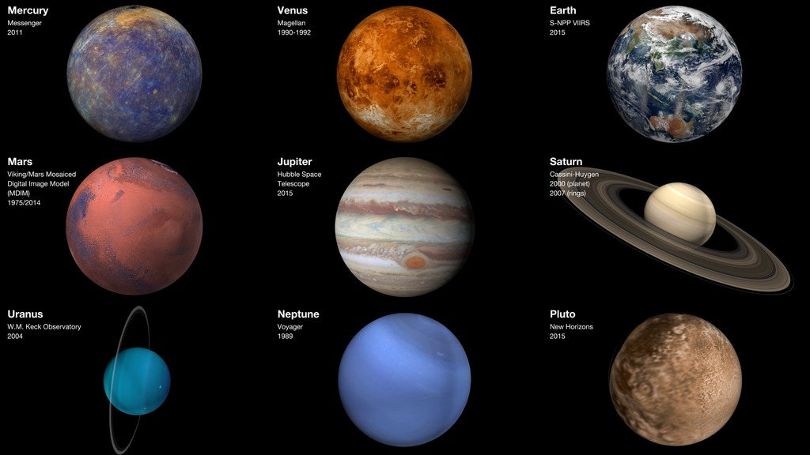

Image Source: NASA

Image Source: NASA
There are eight planets (originally nine!) in our Solar System that travel around the Sun. The four closest planets are smaller in size and rocky. The four planets farthest from the Sun are massive gaseous planets mostly made of gas and ice. Each planet ranges in size, and differs in temperature and appearance.
All eight planets orbit the Sun because of its incredible mass. From that comes "solar", meaning "relating to the sun". The "system" part comes from the fact that each of the planets interact and work together to maintain it's place in said system.
The inner planets: Mercury, Venus, Earth, and Mars are all rocky and small planets with solid, walkable surface. Referred to as "terrestrial planets", they sit the closest to the Sun, making them warmer than the outer planets. However, this does not mean they are identicle in nature. Venus is a hot planet, while Mars is much colder and dry.
The outer planets: Jupiter, Saturn, Uranus (pronounced "YUR-uhn-us"[NASA]), and Neptune are large, freezing planets with no solid surface. Jupiter and Saturn are majority hydrogen and helium, whereas Uranus and Neptune contain more water, ammonia, and methane. All four planets are ringed, and they have many moons.
First discovered in 1930 and named by an 11-year-old girl from Engand, Pluto was the ninth planet in our Solar System. Over time, scientists discovered many other objects past Neptune that would also classify as a planet. Therefore, in 2006, a vote was held to change the definition of what a planet was. The third classification: "has cleared its orbit of other objects" excluded Pluto from being a planet.
Read more about dwarf planets: Moons/Dwarf.
The smallest and closest to the Sun, this planet has no moons and is covered in craters, similar to our moon. With no atmosphere to hold in heat, temperatures range from ≈800°F during the day to ≈-300°F. A year on Mercury is the equivalent of eighty-eight days on Earth.
Around as large as Earth but much hotter due to its thick atmosphere of carbon dioxide, Venus sits at about ≈870°F on a good day. The atmosphere traps heat, and its clouds are made up of sulfuric acid! Venus spins backward compared to most planets, and a day on Venus is longer than its year!
Third planet from the Sun, and the only planet we know of that holds life. 70% of its surface is liquid water, with an atmosphere protecting living things from the Sun's radiation. Sitting at ≈60°F (and climbing...), the Earth is a relatively warm place with one moon and a three hundred sixty five day year cycle.
Cold, dry and red from the iron oxide (rust) in its soil, Mars holds the tallest volcano in the Solar system. Mars has a thin atmosphere, its temperature ≈-65°F (extremely variable). With two small moons and a 687-day year, we currently have multiple rovers exploring its surface.
More than twice as massive as all other planets combined, the largest planet Jupiter is a gas giant made mostly of hydrogen and helium. A giant storm, called "the Great Red Spot" has lasted for centuries! Due to the lack of solid surface, the temperature drastically changes throughout the planet. Jupiter has dozens of moons, and Galileo himself discovered Io, Europa, Ganymede, and Callisto.
Famous for its bright rings made of ice and rock, Saturn is a gas giant and the least dense planet. In fact, it's so light it would float in a pool of water (granted the pool is big enough)! Saturn has over two hundred moons, and its largest, Titan, has a thick atmosphere and lakes of liquid methane!
An ice giant that appears blue-green because of the methane in the atmosphere, Uranus is tilted on its side! It's one of the coldest planets, coming in at ≈-360°F! Thirteen faint rings are visible with 27 known moons.
The farthest planet from the sun, this ice giant has incredibly fast winds. It's faster than any other winds in the solar system, reaching over one thousand miles per hour! One hundred sixty five Earth years must pass before Neptune orbits the Sun once, and its largest Moon, Triton, orbits in the opposite direction of Neptunes spin!